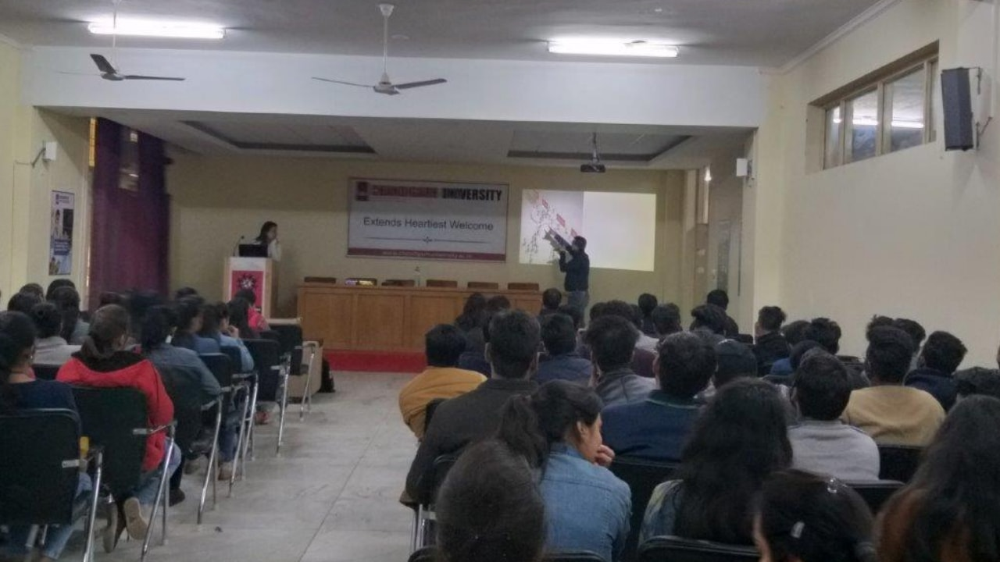
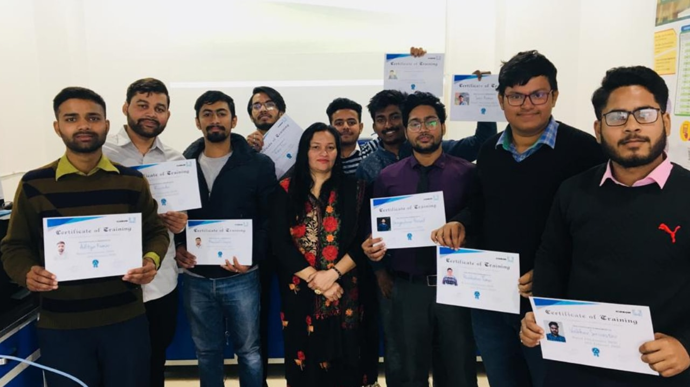
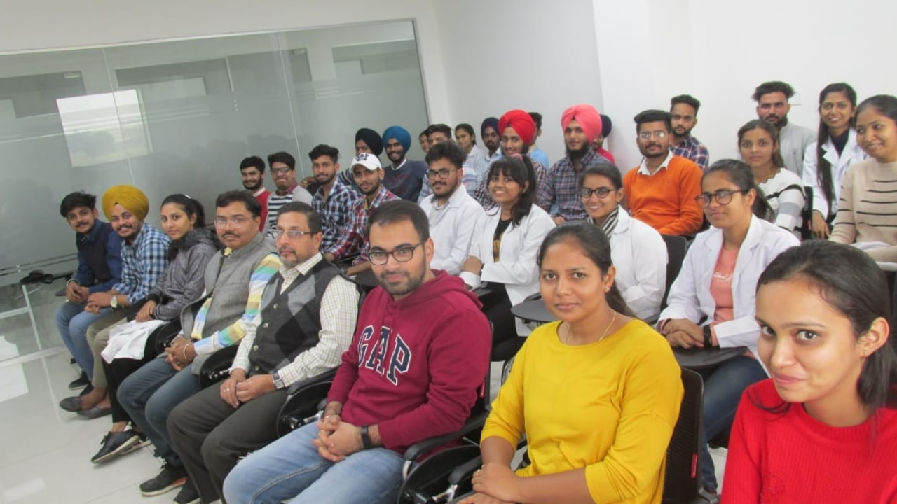
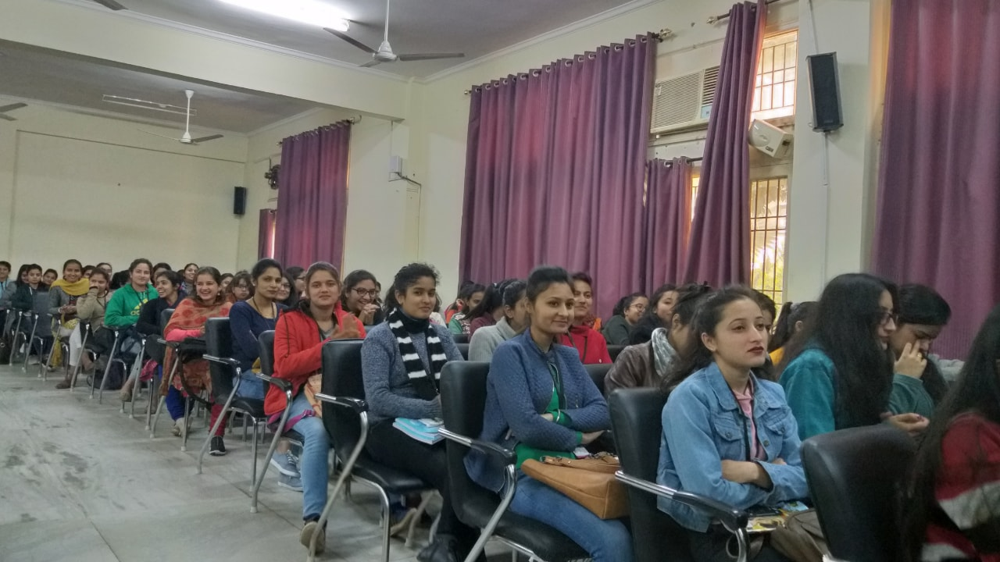
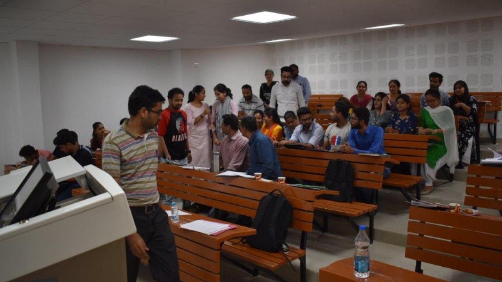
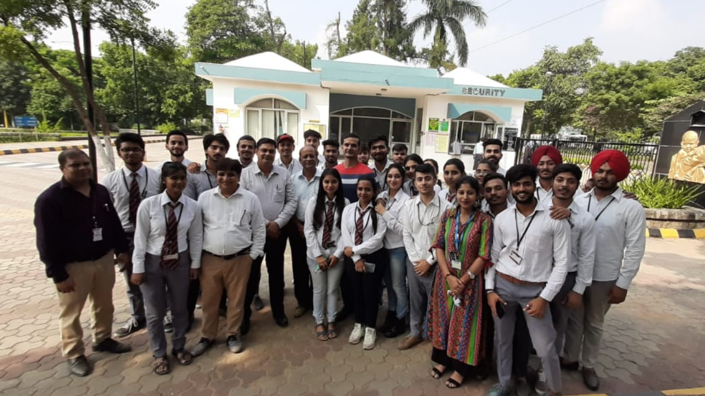
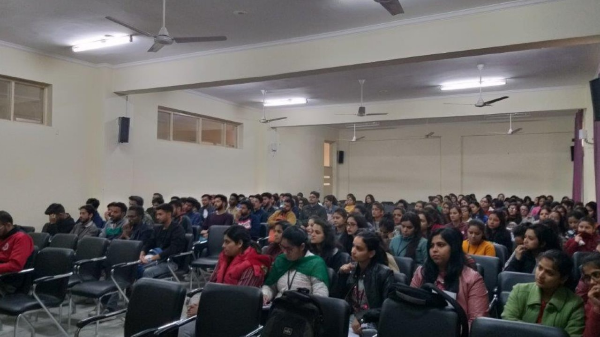
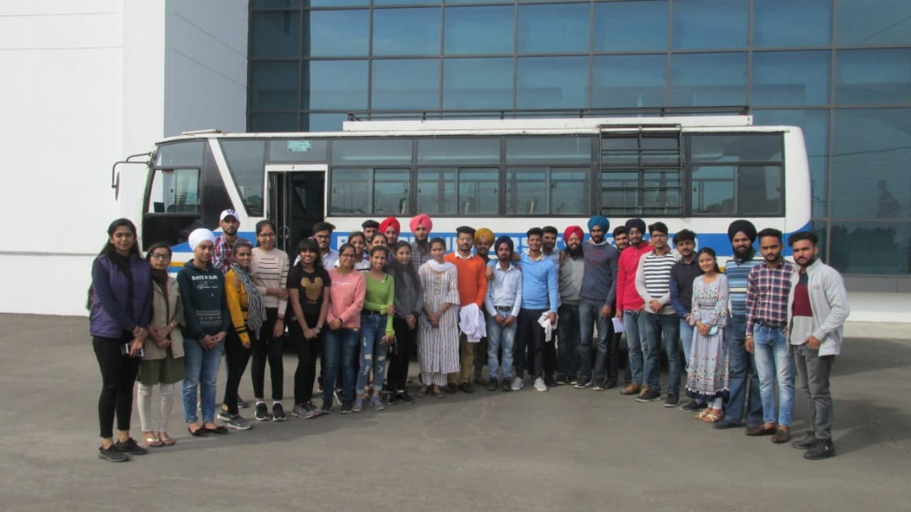
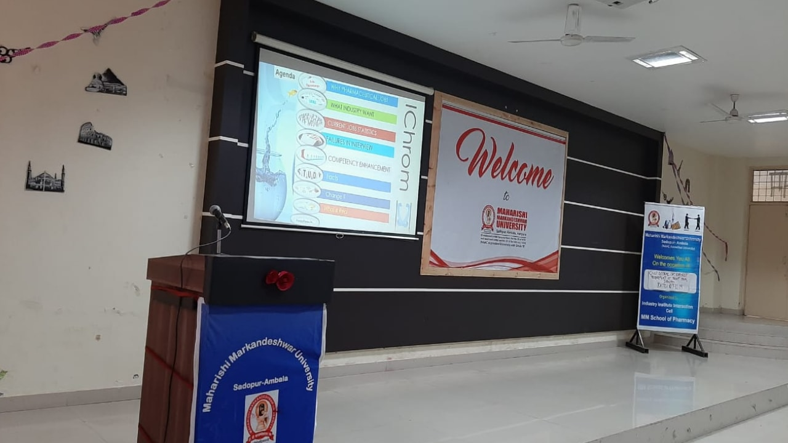

Strategic advisory backed by 27+ years of executive leadership across USFDA, EU GMP, TGA, and global regulatory frameworks.
Founder & Principal Consultant
For over 27 years, my mission has been to strengthen pharmaceutical quality systems beyond compliance checklists. Quality is a responsibility toward patient safety, product integrity, and organizational trust.
My career spans leadership at Reckitt, Glenmark, Hetero Drugs, Ranbaxy, and Torrent Pharmaceuticals — building robust GMP and QMS that create sustainable compliance cultures.
Strategic consulting for pharmaceutical manufacturers, biotech firms, and healthcare organizations navigating complex regulatory landscapes.
End-to-end cGMP advisory — gap assessment, remediation strategy, process & cleaning validation, site readiness.
Learn MoreUSFDA, EU GMP, TGA preparation. Mock audits, CAPA, root cause analysis, real-time inspection support.
Learn MoreRobust frameworks aligned with USFDA, MHRA, WHO guidance. Remediation and CSV implementation.
Learn MoreScience-driven QMS design, CAPA programs, risk management, deviation handling, change control.
Learn MoreUSFDA, EU, MHRA, TGA, ANVISA, Russia submissions. ANDA/EU dossier preparation, technology transfer.
Learn MorecGMP, GDP, GLP, Data Integrity training. Green analytical chemistry consulting and mentoring.
Learn MoreLet's start with a confidential conversation about your quality challenges.
Greener analytical techniques enabling environmentally sustainable drug quantification methods.
Methodology for impurity identification in shelf-life studies using Ultra Convergence Chromatography.
Greener analytical methodology for Chlorocresol estimation with Azole Compounds in Ointments.
Enhanced quality control analysis for essential oil estimation in drug ointments.
Validated UPLC method for Clotrimazole residue in swab samples for cleaning validation.
Real-Time and Process Analytical Technology approaches for modern pharmaceutical quality.
UBBS Nicotine, Delhi
Leading global regulatory pathways for next-generation nicotine products. USFDA PMTA readiness and EU, TGA, international compliance.
Reckitt Benckiser India-HFL, Baddi
End-to-end QA/QC oversight across four manufacturing blocks. TGA and Russian inspections cleared successfully.
Reckitt Benckiser India
Directed large-scale analytical labs, stability programs, product quality monitoring, ANDA/EU submissions compliance.
Glenmark · Hetero · Ranbaxy · Torrent · Orchid · Max GB
QC leadership, site quality, senior research scientist across multiple pharmaceutical MNC organizations.
"Quality by Design and Novel Research on Cancer Biomarkers"
"Innovative and Responsible Research Practices"
"Pharmaceutical Quality Talent Development"
"Quality is more than compliance — it is responsibility toward patient safety."
A premier institute for scientific and talent development in chromatography & analytical chemistry — bridging academia with the pharmaceutical and chemical industries.
Zirakpur, Punjab, India
Founded by Dr. Nandan Kumar Dhir, IChrom is dedicated to advancing chromatographic sciences through hands-on training, analytical research services, and industrial consultancy. The institute empowers students, researchers, and professionals with practical skills and industry-ready expertise.
Visit IChrom.inHands-on practical training on HPLC, UPLC, and chromatographic techniques for academic and industrial applications.
Comprehensive chemistry courses from high school to Ph.D. levels, conducted by experienced educators and researchers.
Full-spectrum analytical facility support for universities and industries, including method development and validation.
Specialized chromatography column restoration services by expert scientists to recover and extend column performance.
Expert consultancy on Good Laboratory Practices (GLP), Lean standards, and regulatory compliance including MHRA and USFDA.
Manuscript drafting, thesis editing, patent documentation, and technical writing in English, Spanish, and Chinese.









Thought leadership rooted in 27+ years of hands-on experience in pharmaceutical quality, analytical chemistry, and regulatory compliance.
Most HPLC method validation failures trace back to poor method development — not the validation itself. Common pitfalls include inadequate forced degradation studies, ignoring mobile phase pH sensitivity, and underestimating matrix effects during specificity testing. A robust Analytical Target Profile (ATP) and systematic Design of Experiments (DoE) approach during development can eliminate 80% of downstream validation failures. This is a mindset shift from "validate what we have" to "develop what will validate."
Regulators are no longer satisfied with surface-level ALCOA+ compliance. USFDA and MHRA warning letters increasingly cite "failure to establish a quality culture" rather than specific technical gaps. True data integrity requires embedding accountability into SOPs, implementing automated audit trails across LIMS and Empower systems, and training teams to understand why every data entry matters — not just how to fill forms correctly.
Acetonitrile remains the default HPLC solvent — but it's toxic, expensive, and environmentally damaging. Our patented Green Analytical Techniques demonstrate that ethanol-water and propanol-based mobile phases can achieve comparable separation efficiency for drug quantification, with 60% lower environmental impact scores. The pharmaceutical industry must move beyond convenience and adopt sustainable chromatographic practices without compromising method robustness.
An unannounced USFDA inspection is not a crisis if your quality systems operate the same way on audit day as every other day. The key lies in proactive internal audit programs that mirror FDA investigator techniques, real-time deviation trending with CAPA effectiveness metrics, and empowering floor-level staff to flag concerns without fear. Compliance is not a department — it's how your entire organization operates.
Indian pharmacy colleges produce 2 lakh+ graduates annually, yet the industry reports a critical skills gap. Most graduates have never operated an HPLC system, performed a real method development, or understood GMP documentation beyond textbook theory. IChrom's hands-on training model bridges this gap by immersing students in actual chromatographic workflows, industry-standard SOPs, and mock regulatory scenarios — creating professionals who can contribute from day one.
Whether you need audit readiness, compliance strategy, or quality systems review — let's start with a conversation.
Connect on LinkedIn
Zirakpur, Punjab, India — 140603